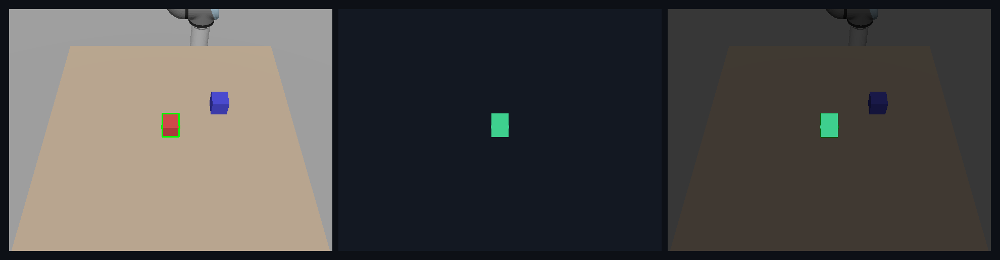

UR5e in Gazebo with ros2_control + MoveIt 2 — a perception-driven pick-and-place capstone, verified passing.
The capstone's perception stage: a Gazebo camera frame, the detected target's mask, and the blend — the mask becomes the planning-scene collision object the arm plans around and grasps.

Forward/inverse kinematics on the UR5e — joints driven through ros2_control, poses verified against the planner.
MoveIt 2 planning-scene collision objects added and updated at runtime, so plans respect the table, the target and the gripper.
The pick target comes from the camera mask — not a hardcoded pose — and is handed to the planner as a grasp goal.
Full sense → plan → grasp → place cycle, verified passing in simulation.
One take of the full sense → plan → grasp → place cycle, with the grasp target arriving from the camera.